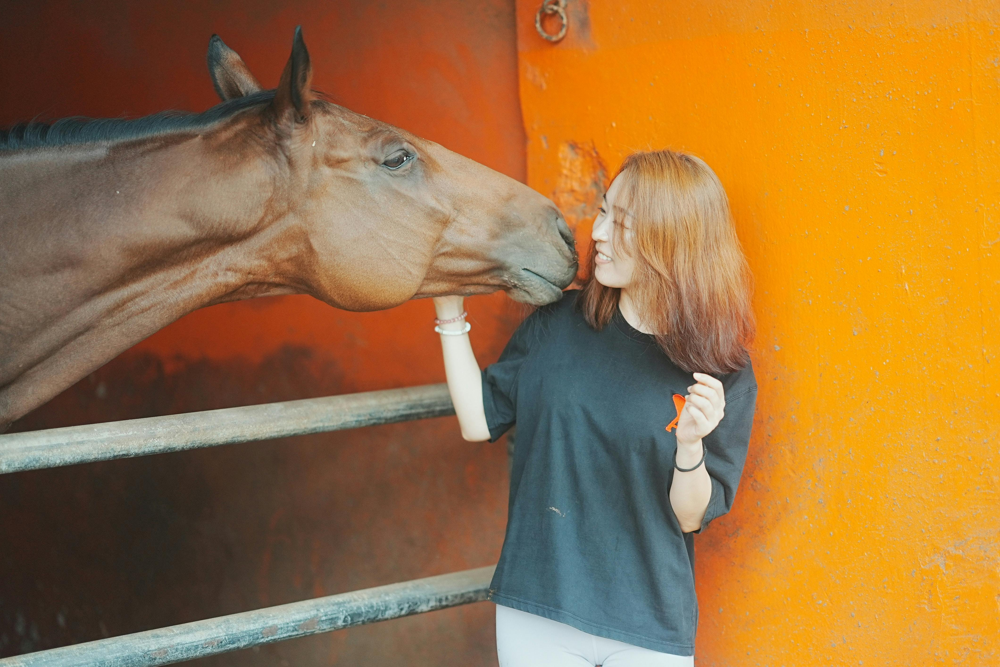
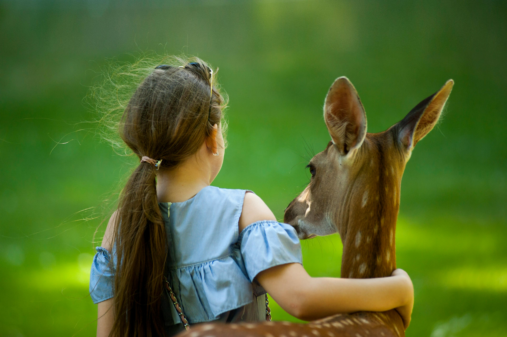
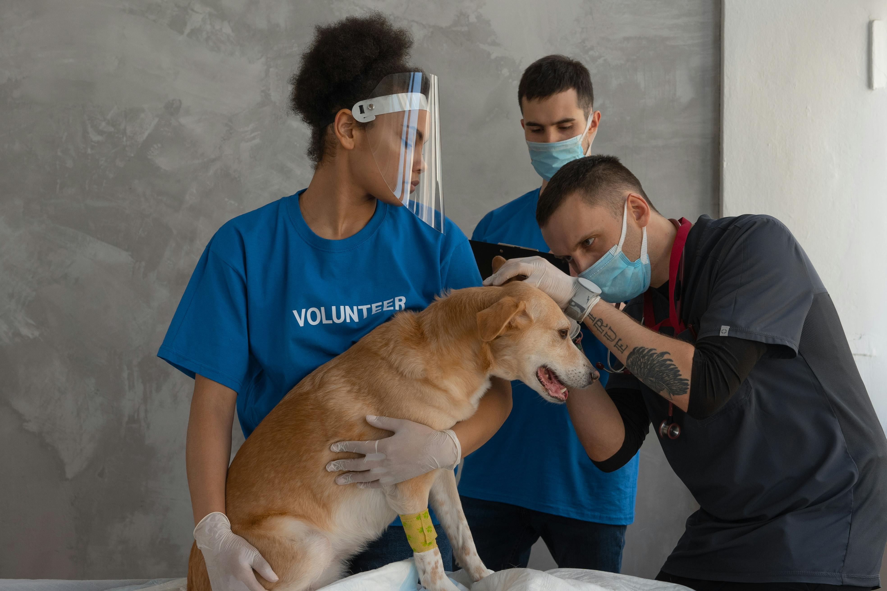

How to Volunteer?
Give Your Time
This is a hands-on role where you'll interact with the animals themselves. You could be walking dogs, socializing cats, cleaning kennels, or feeding the animals. This is a great option for people who love animals and want to give them some TLC.
Adoption Center Assistance
This role involves helping potential adopters find the perfect furry friend. You might greet visitors, answer questions about the animals, or even assist with the adoption process itself. This is a good fit for people who are outgoing and enjoy working with people.
Be a Foster Parent
Fostering involves providing a temporary loving home for an animal in need. This frees up space at the shelter and allows the animal to get used to a home environment. Fostering is a bigger commitment than some volunteer roles, but it's a wonderful way to make a real difference in an animal's life. This is ideal for people who have the space and time to care for an animal but aren't ready for a lifelong pet commitment.